01 / 07
De 17 para 60
pessoas no time de marketing. Reestruturei o organograma, os processos e os reports da área enquanto ela crescia.
Consultoria de marketing e comunicação · 23 anos de mercado
01O ponto de partida
O time existe, mas ninguém sabe exatamente sobre o que responde.
A verba é gasta, mas ninguém sabe dizer o que deu certo.
A marca comunica, mas não para quem deveria.
Arrumar isso não é fazer mais campanha, é organizar o que está embaixo dela.
Perfil 01
Tem competência e cliente, mas a estrutura não comporta o próximo salto.
Perfil 02
O marketing entrega, mas no improviso. Sem processo, sem report, sem dados.
Perfil 03
Sócios com capital, prazo curto e nenhuma referência interna de como montar a área.
02Quem sou
Comecei em agência, como redatora, e depois segui para o atendimento e o planejamento. Depois virei cliente e subi a escada por dentro, de especialista a CMO, passando pelas cadeiras que sustentam uma área inteira: mídia, branding, inteligência de mercado, trade e planejamento.
No Esportes Gaming Brasil, maior grupo de iGaming nacional, liderei quase 60 pessoas. Em 2025, estruturei do zero uma empresa de título de capitalização.
E, ao longo de todo esse caminho, prestei consultoria para diversas empresas do setor público e privado, inclusive com ênfase em projetos incentivados nas áreas de esportes e cultura.
Publicitária · Pós-graduada em gestão de marketing pela Fundação Dom Cabral
Cadeira 01
Cadeira 02
Cadeira 03
Já sentei na cadeira da agência, na do cliente e na do consultor. É da junção das três que eu olho para o seu negócio.
03Como o trabalho acontece
Entrevistas em profundidade com liderança e equipe. Estudo de mercado e concorrência. Mapeamento dos gargalos de operação, estratégia e gente, com solução para cada um.
Organograma. Descrição de cargos amarrados aos objetivos da área e do negócio. Mapeamento de contratações necessárias. Mentoria individual e coletiva.
Definição ou revisão do posicionamento, proposta de valor, propósito, missão, visão e valores. Construção dos arquétipos, personas e tom de voz, com direcionamento estratégico de naming e criação.
Estratégia de marketing e plano de comunicação. Definição de metas, KPIs e OKRs. Calendário comercial. Revisão de orçamentos e de contratos com fornecedores.
Nos contratos periódicos, monitoramento da execução e do andamento dos contratos para análise de indicadores e resultados. Ajustes de rota e apoio estratégico às equipes para garantir consistência, eficiência e evolução contínua.
04Como entrego valor
Não operacionalizo o dia a dia, não prospecto cliente, não alimento redes sociais. Desenho o caminho, estruturo o que falta, treino e/ou acompanho quem vai tocar e indico os parceiros certos para executar.
A sua equipe executa melhor quando sabe exatamente o que fazer, por quê e para quem.
Não entrego um diagnóstico bonito que ninguém consegue executar. Entrego o caminho que a sua equipe sabe tocar, com o que medir, quando e quem cobrar.
Se o plano foi comprovadamente executado e o indicador não se moveu, o problema é do plano. E aí a gente refaz.
05 Números no iGaming
iGaming · Grupo EGB
01 / 07
De 17 para 60
pessoas no time de marketing. Reestruturei o organograma, os processos e os reports da área enquanto ela crescia.
02 / 07
+92%
de seguidores no Instagram em nove meses, chegando a 2,5 milhões.
Comparativo Instagram: out/2023 a jul/2024
03 / 07
29,8%
de share de engajamento
no Festival de Parintins 2025, 2º lugar entre os patrocinadores, à frente de Mercado Livre, Bradesco e Brahma.
04 / 07
1º
1º lugar no JC Recall de Marcas
Por dois anos consecutivos no prêmio JC Recall de Marcas (2025 e 2026), saindo do 3º lugar em 2024.
JC Recall de Marcas 2025
05 / 07
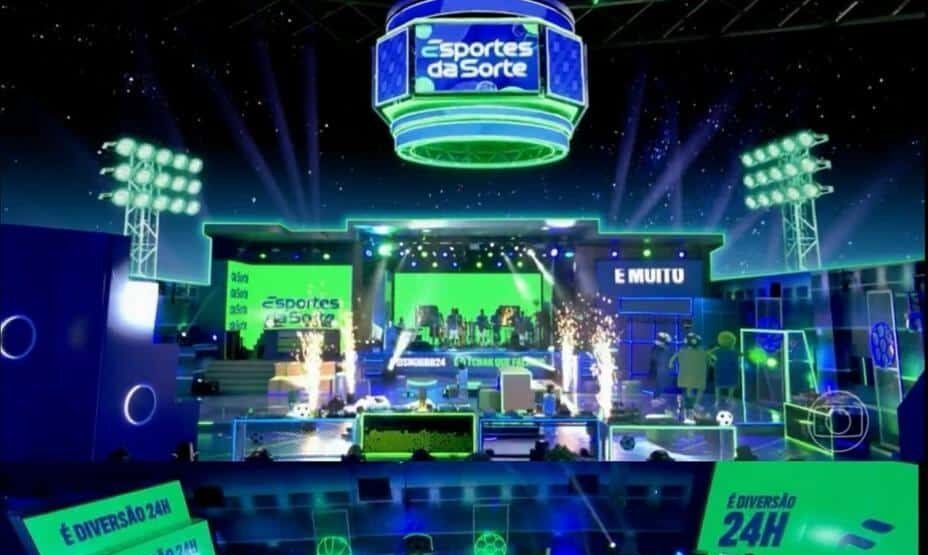
BBB 24
1º nos trending topics nas 24h de festa
X (antigo Twitter)
06 / 07
Top 10
Top 10 em lembrança de marca no iGaming
Liderei o lançamento da Onabet, outra marca do grupo, desde o dia zero e em sete meses de operação, ela já estava entre as dez marcas mais lembradas do setor de apostas.
07 / 07
3º
Em mar aberto
Mar aberto: conversas nas redes fora dos perfis da marca.
06 Fora do iGaming
Alguns números que contam a importância de entender a operação por dentro, antes de propor qualquer coisa.
IFOOD
+19 p.p.
Direcionei a construção de toda a comunicação do lançamento nacional de Super, a rede própria de mercado do iFood, que culminou no aumento de 19 p.p. de market share.
DELL
Prêmio The Power of One
Recebi o Tunnel Awards, o maior prêmio global de marketing da Dell pelo lançamento do Alienware fabricado no Brasil. Foi a primeira vez que o prêmio foi para um trabalho de varejo do país, entre 3 mil inscritos.
TIM · Eficiência
R$ 700 mil
Mais de R$ 700 mil de economia de verba no projeto de eficiência em contratos de mídia da regional Nordeste, premiado nacionalmente.
WALMART.COM · Campanha .Casa
+40%
+40% em captação e 22% de conversão na campanha .Casa, a maior da diretoria de Home.
Setores diferentes. O mesmo método.
07 Case · Esportes da Sorte x Corinthians
“Muito mais que um patrocínio. Uma honra.”
O que pesou na escolha do clube não foi só o cheque: foi também o marketing que já estava na rua, sob a minha direção.
O desafio
Ser escolhido pelo marketing cria uma obrigação: o anúncio não podia ser mais um anúncio. E eu não tinha o atalho de ser da casa: não sou corinthiana, então precisei mergulhar muito antes de falar.
A decisão
Tirei o verde da marca, cor do Palmeiras. O filme foi um manifesto, não peça publicitária, com um integrante da Fiel no lugar de um ator. E o conceito que falava com a alma do corinthiano: “Muito mais que um patrocínio. Uma honra.”
O anúncio
01 1º tempo
No lugar do nome do patrocinador máster, o time entra com “Fiel é” na camisa.
02 Intervalo
O filme gravado no Marco Zero do clube vai ao telão no mesmo minuto em que entra no intervalo do Jornal Nacional.
03 2º tempo
Show de fogos, e o estádio recebe o time de volta já com a marca no peito.
“A gente não muda cor de manto, manto a gente mantém… e só uma empresa do tamanho do Esportes da Sorte para se curvar ao Corinthians e mudar de cor.”
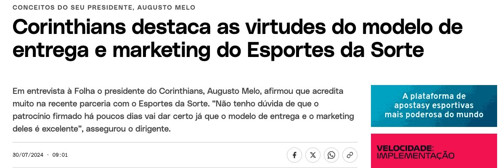
+10 mi
de views nos filmes feitos pela marca.
+100 mil
novos seguidores em 3 dias.
20 dias
da primeira conversa à marca em campo
Num patrocínio de R$ 309 milhões, não foi o valor que ficou da noite. Foi o que a Fiel sentiu, e o fato de que, dali em diante, a marca deixou de ser vista como intrusa e passou a ser recebida como parte do clube.
Meu trabalho não terminou no anúncio. Ele deu origem a uma relação consistente entre marca e clube, e foi ela que ajudou a sustentar a renovação do contrato, seis meses depois da minha saída.
08 Case · Esportes da Sorte · Carnaval 2025
Transformar presença em pertencimento
+12 mi
de foliões impactados
3.500
profissionais na operação sob minha liderança
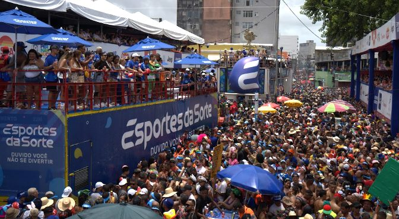
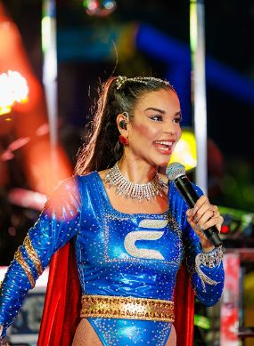
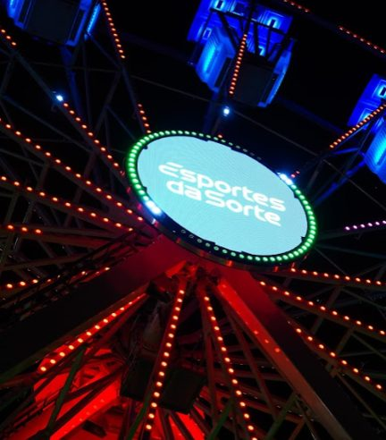
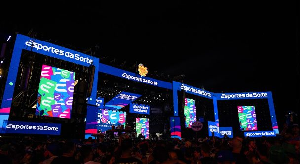
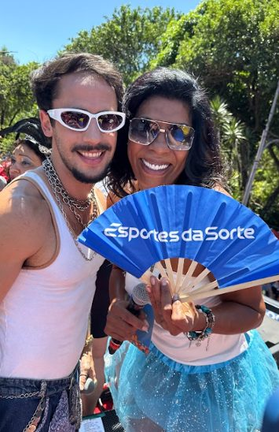
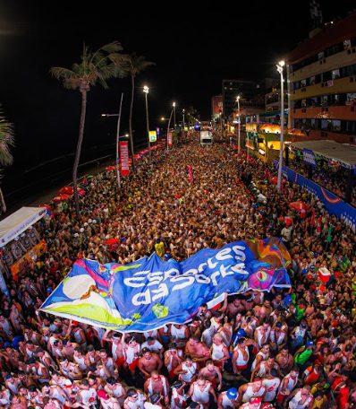
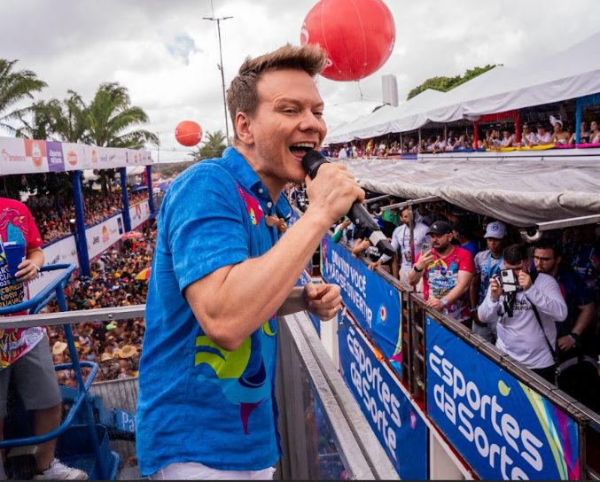
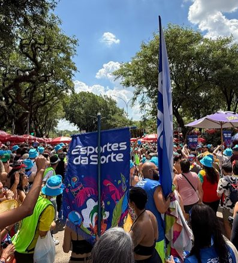
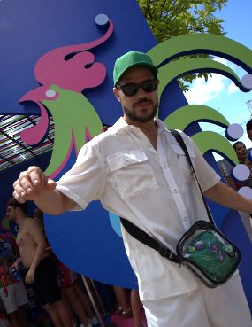
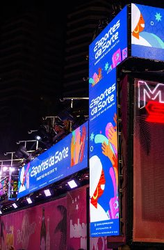
O desafio
Posicionar a marca como uma das maiores patrocinadoras do carnaval do Brasil. O principal indicador: lembrança de marca e foi ele que norteou a distribuição de investimento.
A decisão
Capilaridade no lugar de concentração: mais de cem blocos em quatro praças. E a verba foi para onde o folião estava. Com 63,7% em mídia exterior, porque carnaval é na rua.
A operação
Mais de 2 milhões de brindes, intervenções urbanas, grandes formatos, ações de brand experience (31 mil pessoas só na roda-gigante do Marco Zero, em Recife). Além da logística de 26 artistas e influenciadores contratados, todo o relacionamento com a imprensa. Em Salvador, sem sermos o patrocinador oficial da cidade, fechamos 17 blocos principais do circuito Barra-Ondina: 1,3 milhão de pessoas impactadas por uma fração do custo de uma cota oficial.
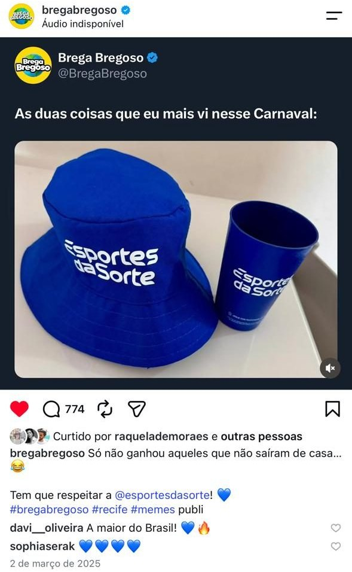
Mídia se compra, engajamento orgânico, não.
Fizemos história nas quatro cidades em que apostei no “carnaval de verdade”, na rua, onde realmente o público estava. Uma exposição massiva, impossível de não ver. Lembrança de marca, buzz orgânico, resultados de um trabalho e operação gigantes, que gerou conexão ao valorizar a identidade de cada local onde a marca estava.
+114%
visitas no site YoY
+291 mi
impactos de mídia
83%
sentimento positivo em mar aberto
09 A parceria
Publicitária com experiência em comunicação, branding, criação e planejamento estratégico. Iniciou a carreira como redatora, chegando à Direção de Criação, à liderança de equipes multidisciplinares e projetos para grandes marcas.
Acumula 15 anos de expertise em Licitações Públicas, com atuação na gestão, criação e coordenação de propostas, além do planejamento estratégico e criativo de projetos culturais submetidos à Lei Rouanet.
Foi especialista em Branding e Mídia no Esportes da Sorte, em Branding na Flutter Entertainment, maior empresa de iGaming do mundo. Atualmente, desenvolve estratégias e experiências de marca para O Boticário e Electrolux, com foco em ativações e Live Marketing.
Relações Públicas por formação e Publicitária por trajetória e experiência de mercado.
25
anos de mercado
12
anos em posições de liderança e gestão de times
11
Liderou a condução do patrocínio da Betnacional no BBB25
Sócia-fundadora do CPPE · Clube de Planejamento de PE
Premiações
10
01
Pontual
O trabalho é desenhado e entregue pronto para que sua equipe possa operacionalizar.
02
Periódico
Inclui acompanhamento e ajuste de rota ao longo do caminho.
O investimento é calculado por horas dedicadas, complexidade e tempo de acompanhamento. Nada é engessado: o escopo nasce da necessidade real de cada empresa.
11 Contato
É aqui que eu entro.
Sofia Aldin